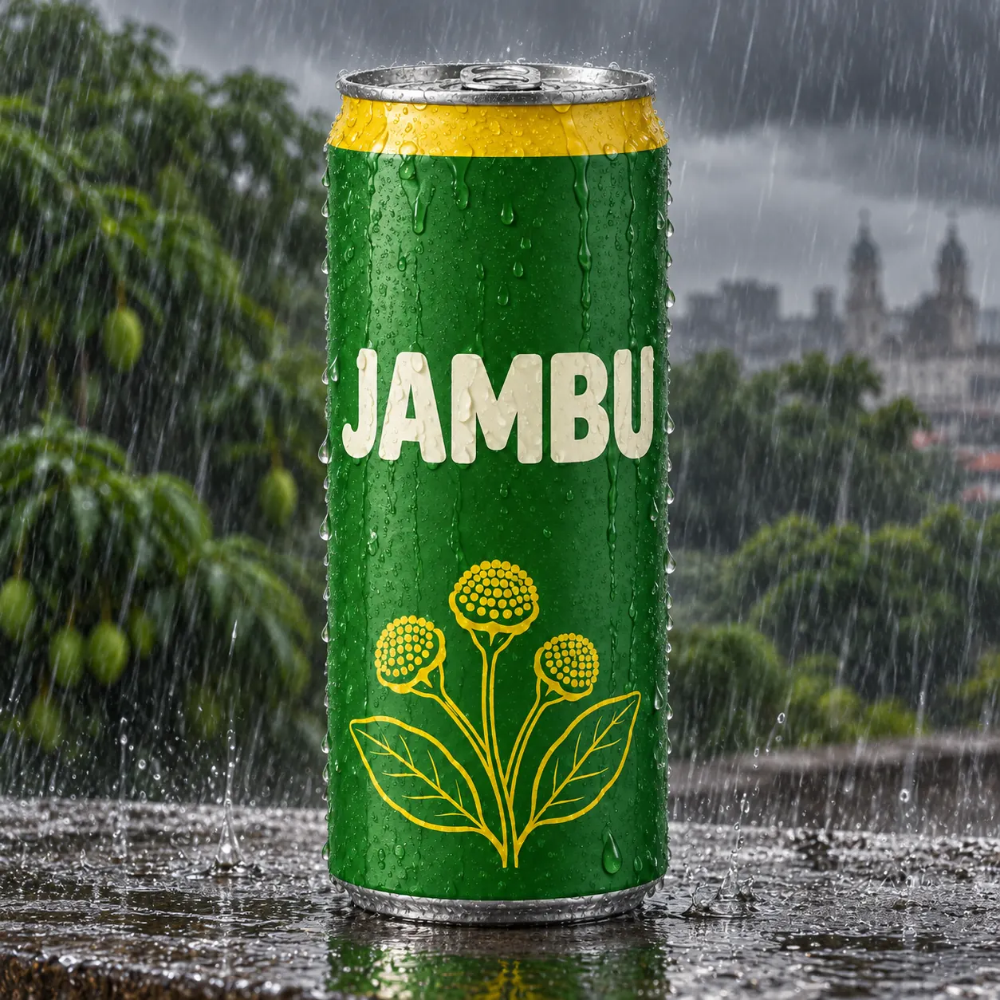
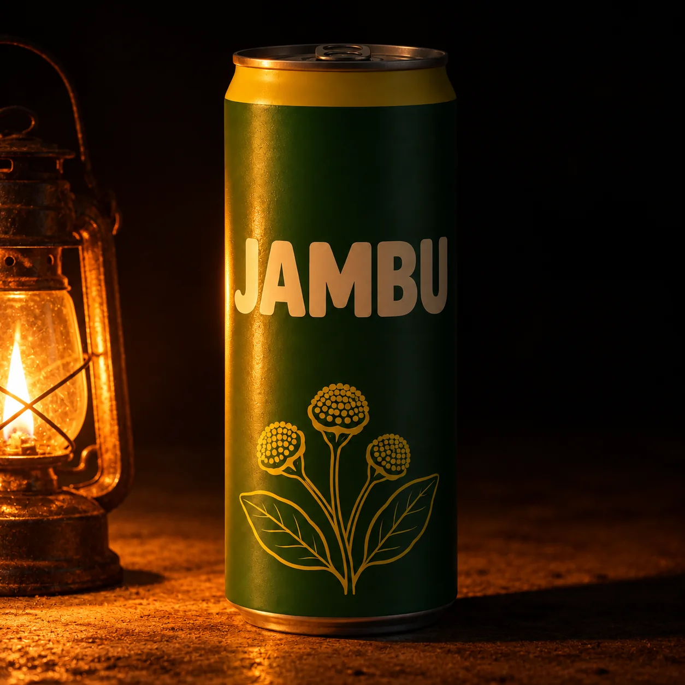
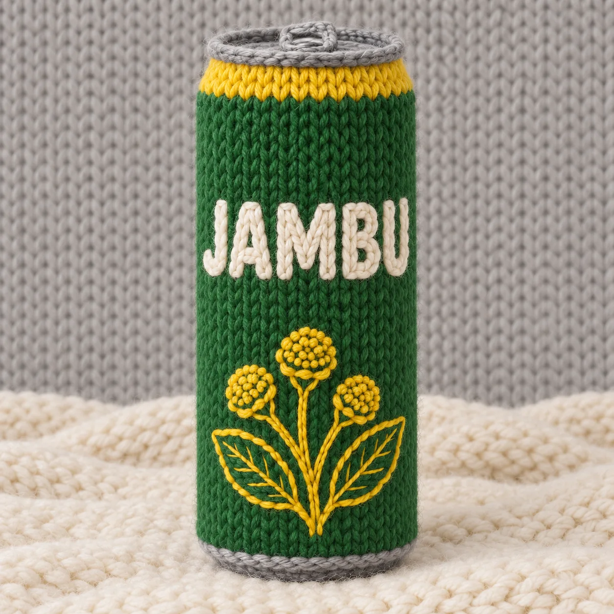
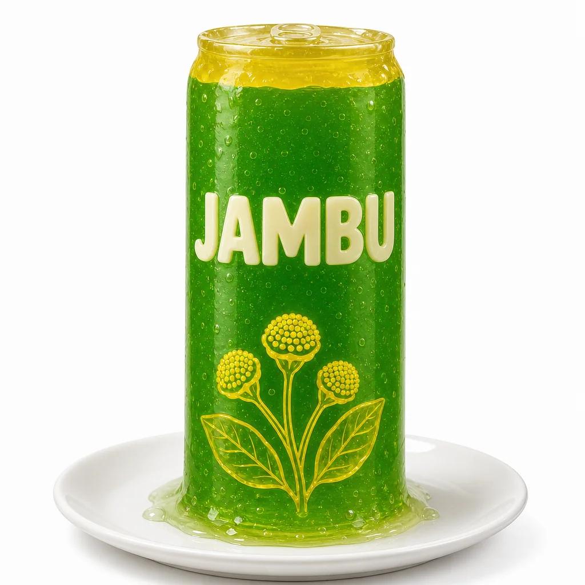
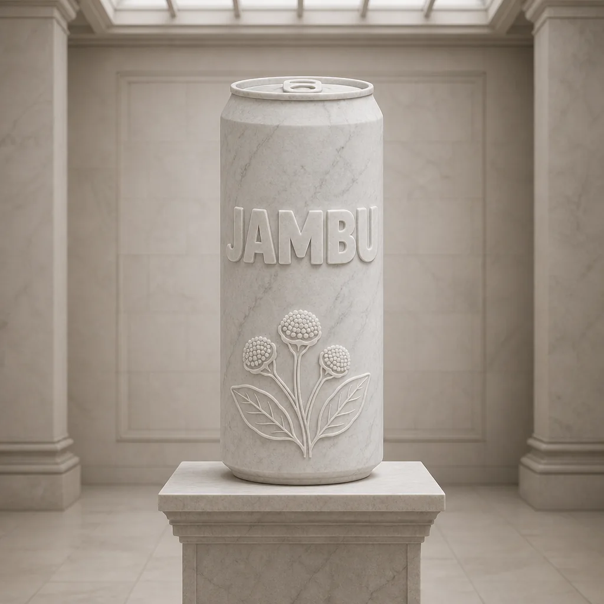
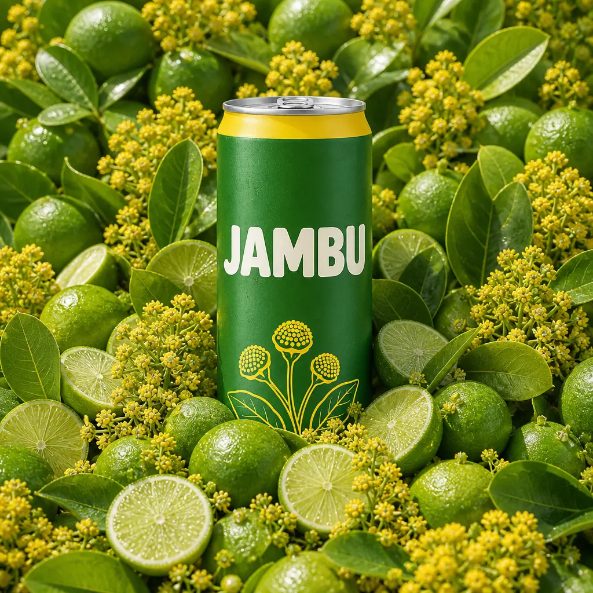
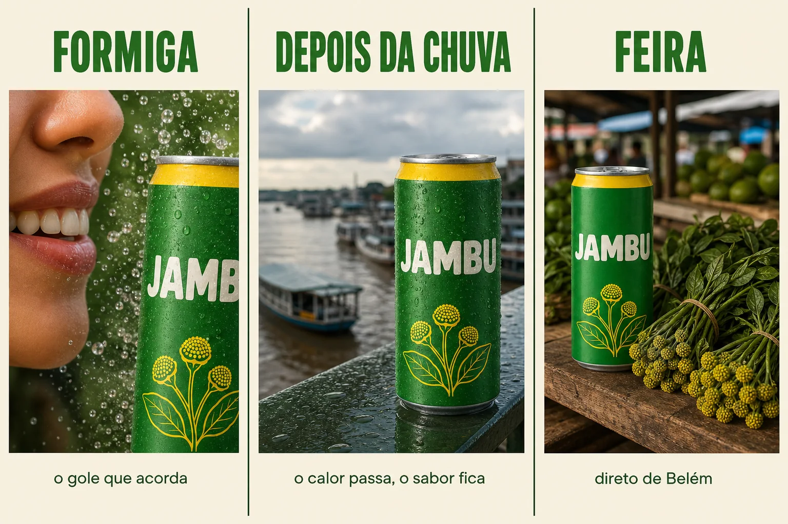
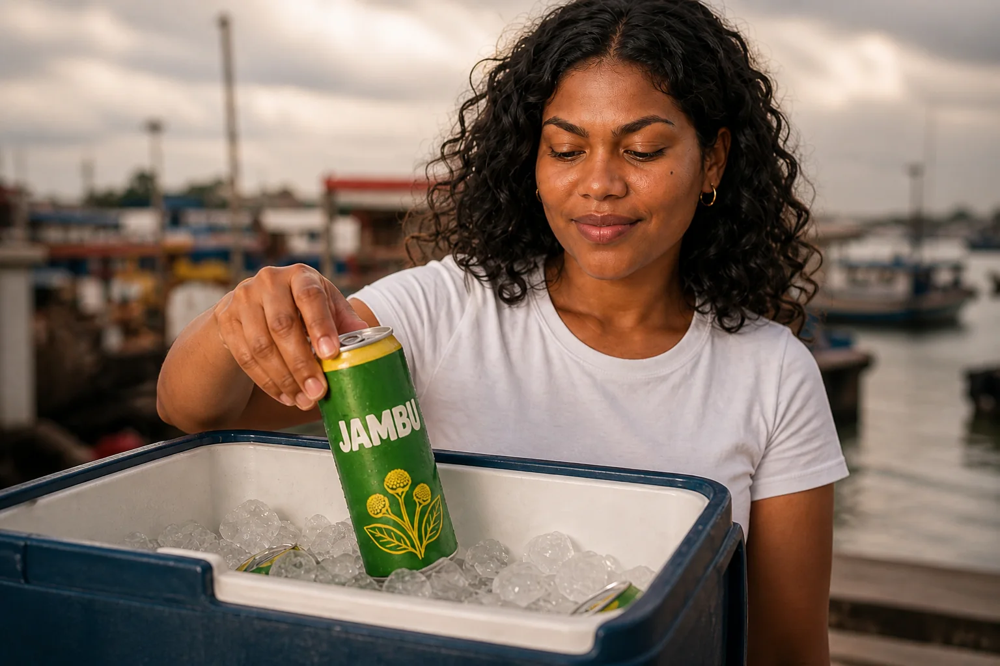
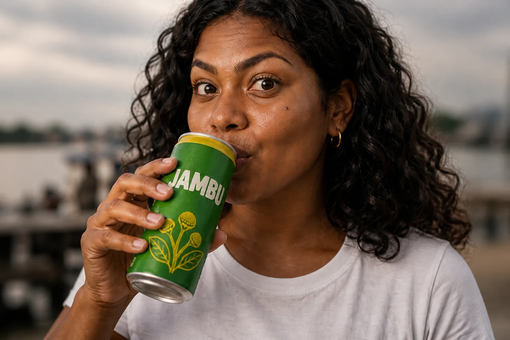
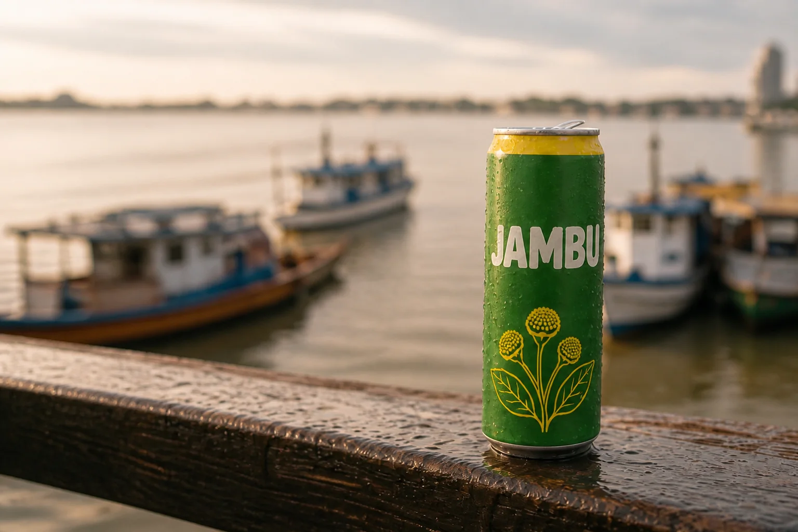

Você já tem a lata da Jambu fotografada com cara de estúdio (módulo 1-1) e a Maíra, heroína da campanha (módulo 1-2). O cliente olha, gosta e pergunta a coisa mais difícil do mundo: “e o que mais dá pra fazer?”. Esta é a hora de explorar: pegar a mesma lata e testar o que acontece quando muda a estação, a luz, o material do mundo em volta — e, dos experimentos que funcionam, tirar conceitos e um storyboard para aprovar antes de produzir.

Prompt usado
Studio packshot of a single slim 350ml aluminum soda can standing upright, perfectly frontal at eye level, centered on a seamless pure white background. The can body is matte leaf-green (#2F7D32) with a bright jambu-yellow (#F2C200) band around the top shoulder, and a simple yellow line illustration of small round jambu flower buds with two leaves near the bottom. Across the middle, the wordmark 'JAMBU' in bold rounded uppercase sans-serif letters, cream-white, large and perfectly legible. Brushed silver lid and pull tab. Soft diffused light from a large softbox above-left, a gentle vertical highlight on the left edge, soft contact shadow under the can. 85mm lens at f/8, everything in sharp focus, no condensation, no props. Clean e-commerce product photography, true-to-color.
A imagem-base de todo este módulo: o packshot da lata Jambu criado no módulo 1-1. Todas as explorações a seguir são edições desta mesma imagem, e é isso que torna a comparação honesta — só muda o que foi pedido.
1A hierarquia do prompt aplicada à exploração
O que é
A regra de ordem que você viu no módulo 1-1 continua valendo: 1) objeto (a lata, com o que a torna reconhecível), 2) contexto (onde ela está, o que acontece em volta), 3) técnico (lente, luz, clima, acabamento). Na exploração, ela ganha uma consequência prática: o objeto é o que você protege, o contexto e o técnico são o que você varia.
Por que aprender
Modelos que raciocinam sobre a cena (em vez de só “pintar pixels”) entendem relações físicas: se você pede chuva, eles molham a lata, escurecem o céu e colocam reflexo no chão; se você apaga a luz e acende uma lamparina, a sombra muda de lado. Isso só funciona bem quando a instrução é clara sobre o que mudar e o que manter. Uma edição vaga (“deixa mais criativo”) faz o modelo mexer em tudo — inclusive no rótulo.
Um truque para ampliar o vocabulário da exploração: quando você vê uma imagem com um clima que gostaria de testar (uma foto de revista, um frame de filme) e não sabe nomear o que está vendo, peça a um assistente de texto com visão que descreva a imagem como um prompt. Ele devolve termos de luz, lente, material e época que você talvez não conhecesse. Não copie a imagem — copie as palavras, e use-as como um eixo novo sobre a sua base.
Conceitos-chave em ação
Eixos de exploração para um produto
| Eixo | Frase para o prompt (inglês) | O que tem de ficar intacto |
|---|---|---|
| Estação / clima | Change ONLY the season/weather to a heavy tropical afternoon rain… | lata, logo, ângulo, enquadramento |
| Fonte de luz | Turn off the studio lights; the only light is a small kerosene lantern to the left… | posição da lata, composição |
| Material do mundo | Rebuild the entire set and the can as if hand-knitted from wool yarn… | silhueta, cores de marca, wordmark legível |
| Humor | Make the mood mysterious and nocturnal, deep shadows, fog… | produto e enquadramento |
| Tema cultural | Place the can on a riverside market stall at dawn, baskets of fruit… | lata e escala dela no quadro |
| Estilo visual | Re-render as a 1970s magazine ad photograph, warm faded film… | composição, textos da lata |
2Estação e luz: o mundo muda, a lata não
O que é
Em Belém não há inverno de neve — há a chuva da tarde, que chega quase na mesma hora todo dia. Para uma marca paraense, trocar a “estação” é trocar o clima do dia: sol a pino, chuva forte, fim de tarde alaranjado, noite úmida. A outra troca simples é a fonte de luz: apagar o estúdio e deixar só uma luz prática na cena (lamparina, poste, tela de celular).
Por que aprender
Observe nas duas edições o que o modelo decidiu sem que ninguém pedisse: gotas sobre o metal, reflexo no piso molhado, a sombra da lata indo para o lado oposto da lamparina, o brilho quente no alumínio. É essa lógica física que torna a exploração útil: você não precisa descrever cada gota, só a situação.
Conceitos-chave em ação
Prompt usado
Studio packshot of a single slim 350ml aluminum soda can standing upright, perfectly frontal at eye level, centered on a seamless pure white background. The can body is matte leaf-green (#2F7D32) with a bright jambu-yellow (#F2C200) band around the top shoulder, and a simple yellow line illustration of small round jambu flower buds with two leaves near the bottom. Across the middle, the wordmark 'JAMBU' in bold rounded uppercase sans-serif letters, cream-white, large and perfectly legible. Brushed silver lid and pull tab. Soft diffused light from a large softbox above-left, a gentle vertical highlight on the left edge, soft contact shadow under the can. 85mm lens at f/8, everything in sharp focus, no condensation, no props. Clean e-commerce product photography, true-to-color.

Instrução de edição usada (sobre a imagem-base)
Change ONLY the world around the can and the weather: replace the white studio with an outdoor wet concrete ledge in Belém during a heavy tropical afternoon downpour — dark grey storm sky, visible streaks of rain, big raindrops beading and running down the metal of the can, small splashes at its base, a glossy reflection of the can on the wet surface, blurred green mango trees behind. The can stays in exactly the same position and size, frontal and centered. Keep the can's shape, the yellow top band, the jambu flower illustration, the JAMBU wordmark, the leaf-green and yellow colors, the camera angle and framing exactly the same. No other text in the scene.

Instrução de edição usada (sobre a imagem-base)
Completely re-light this scene: turn off ALL studio lights. The white background becomes a dark night space. The ONLY light source is a small old kerosene lantern with a warm flickering flame standing on the floor to the LEFT of the can: warm orange light (about 1800K) falls on the left side of the can, a bright specular reflection of the flame on the metal, the right side of the can falls into deep shadow, and the can casts a long soft shadow to the RIGHT across the floor. Deep darkness beyond the pool of light. The can stays in exactly the same position and size. Keep the can's shape, the yellow top band, the jambu flower illustration, the JAMBU wordmark, the leaf-green and yellow colors, the camera angle and framing exactly the same.
Duas edições da mesma base. Na chuva, repare nas gotas e no reflexo; na lamparina, na sombra que agora tem direção e na cor quente sobre o verde. Em ambas, o que precisa ficar — forma da lata, wordmark, verde e amarelo — foi protegido pela frase de proteção. Abra “Prompt usado” para ver a instrução exata.
✓ Instrução que funciona
- “Change ONLY the weather to heavy afternoon rain…”
- “The only light source is a kerosene lantern on the left”
- frase de proteção no final
✗ Instrução que bagunça
- “make it rainy and moody and cooler”
- “better lighting”
- pedir chuva e trocar o ângulo na mesma edição
Uma boa sequência de clima para uma marca tropical: sol a pino (sombras curtas e duras, cores saturadas), céu fechando (luz difusa, verde mais profundo), chuva forte (reflexos, gotas, contraste baixo), depois da chuva (céu abrindo, raios de sol, tudo brilhando de molhado). Quatro edições da mesma base contam um dia inteiro — e, como você verá no storyboard, também contam uma história.
3Materiais impossíveis: tricô, gelatina, escultura, frutas
O que é
Quando o modelo entende linguagem comum, você pode pedir coisas que nenhum estúdio faria numa tarde: a cena inteira de tricô, a lata de gelatina translúcida, a lata como escultura de mármore num museu, o cenário feito de pilhas de frutas. Cada material conta uma coisa diferente sobre a marca — aconchego, diversão, clássico, natural.
| Material | O que comunica | Risco típico |
|---|---|---|
| Tricô / crochê | feito à mão, afeto, artesanal | wordmark vira bordado ilegível |
| Gelatina translúcida | divertido, refrescante, “formiga” | a lata perde a forma e vira bolha |
| Escultura de mármore | clássico, premium, atemporal | a cor de marca some (mármore é branco) |
| Pilhas de frutas e flores | natural, ingrediente, origem | a lata some no meio do excesso |
Por que aprender
Esse tipo de edição mostra rápido o que é essencial na sua marca. Se, feita de mármore, a lata ainda é reconhecível como Jambu (pela silhueta, pelo wordmark, pela faixa amarela), a identidade é forte. Se ela vira “uma lata qualquer”, você aprendeu que o produto depende demais da cor — informação preciosa para o manual de marca.
Conceitos-chave em ação

Instrução de edição usada (sobre a imagem-base)
Fully re-render this ENTIRE image as if everything were hand-knitted from chunky wool yarn. The can itself becomes a soft knitted sculpture with clearly visible knit stitches: leaf-green yarn body, a yellow yarn band at the top, the jambu flower buds stitched in yellow yarn, and the word JAMBU embroidered in cream-white yarn, large and still clearly readable. It stands on a knitted cream blanket against a knitted light-grey backdrop. Soft studio light reveals the fuzzy fibers. Keep the can's silhouette, proportions, frontal angle, size and centered framing exactly the same. No other text.

Instrução de edição usada (sobre a imagem-base)
Fully re-render this ENTIRE image so the can is made of glossy translucent jelly (gelatin dessert): the body is see-through leaf-green jelly with tiny suspended bubbles and light passing through it, the top band is a layer of translucent yellow jelly, the word JAMBU is formed by opaque cream-white jelly letters embedded in the front and still clearly readable, the top rim slightly wobbly. It stands on a white ceramic plate with a subtle jiggle ripple at its base and a few glossy jelly drips. Bright soft studio light with shiny specular highlights. Keep the can's silhouette, proportions, frontal angle, size and centered framing. No other text.

Instrução de edição usada (sobre a imagem-base)
Fully re-render this ENTIRE image as a museum scene: the can is now a classical sculpture carved from white Carrara marble, with grey veining and subtle chisel marks; the top band, the jambu flower illustration and the JAMBU wordmark are carved in shallow relief into the stone, still readable. It stands on a tall stone pedestal in a quiet gallery with soft diffused skylight from above and a pale stone wall behind. The sculpture keeps exactly the can's silhouette, proportions, frontal angle and centered framing. No other text in the scene.

Instrução de edição usada (sobre a imagem-base)
Fully re-render the whole set as built from piles of fruit and flowers: the can stands in the center, unchanged, half-sunk into a lush mound of halved limes, whole green limes, bright green jambu leaves and hundreds of small round yellow jambu flower buds; behind it, a wall of stacked limes and jambu bunches fills the entire background. Bright natural daylight from above-left, fresh droplets on the fruit. The can itself stays exactly the same: shape, yellow top band, jambu flower illustration, JAMBU wordmark, leaf-green and yellow colors, frontal angle and size. No other text.
Quatro edições da mesma packshot, cada uma trocando só o material do mundo. Confira em cada uma: a silhueta da lata continua a mesma? O nome JAMBU dá para ler? O verde e o amarelo sobreviveram? Onde algo se perdeu, esse é o ponto a reforçar na instrução.
4De experimentos a conceitos de campanha
O que é
Um conceito de campanha é uma ideia que dá para explicar numa frase e que gera muitas peças. Ele nasce quando você olha as explorações e percebe um fio: “a chuva das três ficou linda” + “a lamparina deu um clima de história” → conceito “Depois da chuva”. Cada conceito precisa de um nome, um tom, uma peça-âncora e uma paleta de situações.
Ficha de conceito (preencha para cada um)
| Campo | Pergunta | Exemplo Jambu — “Formiga” |
|---|---|---|
| Ideia em 1 frase | O que a campanha diz? | O primeiro gole faz a boca formigar — e o dia acorda. |
| Tom | Como fala? | brincalhão, surpreso, quente |
| Peça-âncora | Qual imagem resume tudo? | close da heroína no instante do gole, olhos arregalados |
| Explorações de origem | De qual teste nasceu? | gelatina (textura que “vibra”) |
| Onde vive | Formatos e canais | Reels, cartaz de ponto de venda, embalagem de seis |
Por que aprender
Mostrar 30 imagens soltas confunde o cliente; mostrar três caminhos com nome faz ele escolher. E, uma vez escolhido o conceito, você deixa de explorar às cegas: toda nova imagem responde à pergunta “isto é Formiga?”.
Conceitos-chave em ação

Instrução de edição usada (sobre a imagem-base)
Using this exact can as the hero product, design a CAMPAIGN CONCEPT BOARD on an off-white (#F6F0E1) background, divided into three equal vertical columns with thin dark-green (#12301A) divider lines. Each column has a title at the top in a heavy condensed rounded uppercase sans-serif in leaf green (#2F7D32), a photographic scene in the middle featuring the same can, and one short line below in a small clean geometric sans-serif. Column 1: title 'FORMIGA', scene: extreme close-up of a woman's smiling lips next to the can with bursts of fizz, line 'o gole que acorda'. Column 2: title 'DEPOIS DA CHUVA', scene: the wet can on a riverside railing, river and boats blurred behind, line 'o calor passa, o sabor fica'. Column 3: title 'FEIRA', scene: the can on a wooden market stall among bundles of jambu with yellow flower buds, line 'direto de Belém'. Keep the can design identical in all three. Every text spelled exactly as written, no other text.
Uma prancha de conceitos gerada como edição da lata-base: três colunas com nome, cena e tom. É um rascunho para conversa com o cliente, não peça final — confira se os títulos saíram corretos antes de mostrar (aqui saíram: FORMIGA, DEPOIS DA CHUVA, FEIRA e as três linhas de apoio). Repare que na coluna FORMIGA o nome da lata saiu cortado na borda (“JAMB”): num conceito tudo bem, numa peça final não.
5Storyboard de 6 quadros numa só imagem
O que é
O storyboard é o roteiro desenhado: uma sequência de quadros que mostra o que a câmera vê em cada momento. Gerado numa única imagem, ele tem uma vantagem enorme: o modelo cria todos os quadros juntos, então a heroína, a roupa, a lata e a luz ficam coerentes entre eles. Você usa a imagem da heroína como referência e descreve a história quadro a quadro.
Estrutura de 6 batidas para um comercial curto
| Quadro | Função | Jambu — “Depois do calor” | Plano / câmera |
|---|---|---|---|
| 1 | Situação | meio-dia abafado no mercado à beira do rio; Maíra se abana | plano geral, calor visível |
| 2 | Desejo | ela tira a lata gelada de um isopor com gelo | plano médio |
| 3 | Gatilho | abre a lata: gotas e um jato de gás | plano-detalhe nas mãos |
| 4 | Virada | primeiro gole: os lábios formigam, olhos arregalados, riso | close no rosto |
| 5 | Consequência | a chuva da tarde começa e ela ri sob a chuva, lata na mão | plano inteiro, contraluz |
| 6 | Assinatura | a lata no parapeito molhado, rio ao fundo, o nome JAMBU legível (o slogan “O refri que formiga” entra na edição) | packshot final |
Você não precisa ser roteirista para escrever a história. Descreva a ideia em uma frase para um assistente de texto (“a heroína está com calor, bebe a Jambu, a boca formiga e a chuva chega”) e peça seis quadros com plano e ação. Enxugue o resultado para caber num prompt de imagem — algo entre 800 e 1.500 caracteres funciona bem — e mantenha uma linha curta por quadro. O mesmo texto, depois, vira a base do prompt de vídeo.
Por que aprender
A pergunta do storyboard não é “está bonito?”, é “a história se entende sem som?”. Se alguém olha a grade e consegue contar: calor → lata → gole → formigamento → chuva → marca, o comercial funciona. Se um quadro precisa de explicação, troque-o agora, quando custa uma geração, e não depois do vídeo.
Conceitos-chave em ação

Instrução de edição usada (sobre a imagem-base)
Using this exact woman as the protagonist — Maíra: same face, deep brown skin, beauty mark on the left cheekbone, voluminous shoulder-length black wavy-curly hair, small gold hoop earrings and the same white t-shirt in every panel — create a 6-panel cinematic storyboard in a clean 2x3 grid (three panels on top, three below), thin white gutters, each panel numbered 1 to 6 in a small white box in its top-left corner. Photorealistic film stills, consistent warm tropical color grade, Belém riverside setting. 1. Wide shot: sweltering noon at a riverside market, she fans herself with her hand, heat haze. 2. Medium shot: she pulls an ice-cold slim leaf-green aluminum can with a yellow top band and the cream word JAMBU out of a cooler full of ice. 3. Extreme close-up: her hands pop the can open, droplets and a burst of fizz. 4. Close-up: first sip, her eyes wide in surprise, starting to laugh as her lips tingle. 5. Full shot, backlit: the afternoon rain starts and she laughs under the rain, arms open, can in hand. 6. Packshot: the wet can alone on a riverside railing, river and wooden boats softly blurred behind, the word JAMBU clearly readable. Same woman, same outfit and same can in every panel. No other text besides the panel numbers and the JAMBU wordmark on the can.
O storyboard gerado como edição da imagem da heroína (módulo 1-2), com a lata-base anexada como segunda referência: seis quadros numerados em grade 2×3. A continuidade segurou — mesmo rosto com a pinta, argolas, camiseta branca e o mesmo rótulo do quadro 2 ao 6 — e cada quadro tem um plano diferente: geral na feira, médio no isopor, detalhe da lata sendo aberta, close do gole, corpo inteiro na chuva e packshot no parapeito. Um desvio para anotar: no quadro 5 apareceu uma calça larga cáqui que ninguém pediu; num storyboard, isso vira nota para o figurino.
6Do storyboard aos quadros finais
O que é
Há três caminhos para sair da grade e chegar em imagens de verdade. Nenhum é perfeito; escolha pelo que você precisa preservar.
| Caminho | Como | Vantagem | Risco |
|---|---|---|---|
| A. Ampliar o quadro N | anexa a grade e pede: “recreate ONLY panel 4 as a full-frame image” | herda roupa, luz e cenário da grade | com seis quadros na referência, o modelo às vezes mistura dois |
| B. Recortar e ampliar | corta o quadro num editor, faz upscale e usa o recorte como referência | o modelo vê só o que interessa | o recorte tem pouca resolução; detalhes podem “derreter” |
| C. Prompts separados | pede a um assistente de texto que escreva um prompt por quadro e gera cada um com a heroína e a lata anexadas | máxima qualidade por quadro | a continuidade entre quadros depende de você |
Por que aprender
Aqui usamos o caminho A: cada quadro abaixo é uma edição da grade com a instrução “recrie só o quadro N em tela cheia”. Compare com o quadro correspondente no storyboard: a roupa, a lata e a luz vieram de lá, e o rosto ganhou definição.
Conceitos-chave em ação

Instrução de edição usada (sobre a imagem-base)
The attached image is a 6-panel storyboard. Recreate ONLY panel 2 (top row, middle: the woman pulling the ice-cold green JAMBU can out of a cooler full of ice) as a single full-frame, high-resolution photorealistic cinematic still. Keep its composition, medium-shot framing, action, the woman's face, hair, earrings and white t-shirt, the can design, the lighting and the warm color grade. Add fine detail: ice crystals, condensation on the can, skin texture. Do not include any other panel, grid lines, borders or panel numbers.

Instrução de edição usada (sobre a imagem-base)
The attached image is a 6-panel storyboard. Recreate ONLY panel 4 (bottom row, left: close-up of the woman's first sip, eyes wide in surprise, starting to laugh) as a single full-frame, high-resolution photorealistic cinematic still. Keep its close-up framing, action and expression, the woman's face, beauty mark, hair, gold hoop earrings and white t-shirt, the green JAMBU can at her lips, the lighting and the warm color grade. Add fine detail: skin pores, droplets on the can. Do not include any other panel, grid lines, borders or panel numbers.

Instrução de edição usada (sobre a imagem-base)
The attached image is a 6-panel storyboard. Recreate ONLY panel 6 (bottom row, right: the wet green JAMBU can alone on a riverside railing, river and boats blurred behind) as a single full-frame, high-resolution photorealistic product still. Keep its composition, camera angle, the can design with the yellow top band and readable JAMBU wordmark, the raindrops, the lighting and the color grade. Do not include any other panel, grid lines, borders or panel numbers.
Três quadros do storyboard ampliados por edição da própria grade. Verifique a continuidade: é a mesma heroína nos quadros 2 e 4? A lata do quadro 6 é a mesma da grade? Aqui os três passaram: o quadro 2 repete o isopor azul e o gesto, o 4 mantém o olhar arregalado e a pinta, o 6 repete o parapeito molhado e os barcos. Se um quadro tivesse misturado elementos de outro (erro comum no caminho A), a saída seria passar para o caminho B ou C só nele.
Upscale por recorte, passo a passo (caminho B)
- Abra o storyboard num editor e recorte o quadro com uma margem de 5–10 px (sem a borda e o número).
- Faça um upscale de 2× a 4× (no próprio editor, numa ferramenta de upscale ou no upscale por região da sua plataforma).
- Anexe o recorte ampliado e as referências originais (heroína + lata-base) — o recorte dá a cena, as referências dão a identidade.
- Prompt curto: “Recreate this frame as a high-resolution cinematic still. Keep the composition and action. Use the woman's face from reference 2 and the can from reference 3 exactly.”
- Compare com o quadro da grade e com as referências; corrija só o que divergiu (uma instrução por vez).
O caminho C (prompts separados) também tem um atalho: anexe o storyboard aprovado a um assistente de texto e peça um prompt por quadro, cada um repetindo o DNA da heroína e o bloco da lata. Você perde a garantia de continuidade que a grade dá, mas ganha controle fino sobre lente e luz de cada plano — útil para os quadros mais importantes, como o close do gole e o packshot final.
7Controle de qualidade da sequência
O que é
Com os quadros ampliados, coloque todos lado a lado na ordem da história e confira como um continuísta de set: cada detalhe que aparece em dois quadros tem de ser igual nos dois.
✓ Confira em cada quadro
- rosto: formato, sobrancelhas, marcas da pele iguais à referência
- figurino: mesma peça, mesma cor, mesmos acessórios
- lata: forma, faixa amarela, wordmark JAMBU legível
- luz: a hora do dia avança de forma lógica (sol → nuvem → chuva)
✗ Erros de continuidade comuns
- a lata muda de verde-folha para verde-limão entre quadros
- o brinco aparece no quadro 2 e some no 4
- a chuva do quadro 5 sem nuvem nenhuma no 4
- a heroína fica mais jovem ou mais “bonitinha” no close
Instrução de edição usada (sobre a imagem-base)
The attached image is a 6-panel storyboard. Recreate ONLY panel 2 (top row, middle: the woman pulling the ice-cold green JAMBU can out of a cooler full of ice) as a single full-frame, high-resolution photorealistic cinematic still. Keep its composition, medium-shot framing, action, the woman's face, hair, earrings and white t-shirt, the can design, the lighting and the warm color grade. Add fine detail: ice crystals, condensation on the can, skin texture. Do not include any other panel, grid lines, borders or panel numbers.
Instrução de edição usada (sobre a imagem-base)
The attached image is a 6-panel storyboard. Recreate ONLY panel 4 (bottom row, left: close-up of the woman's first sip, eyes wide in surprise, starting to laugh) as a single full-frame, high-resolution photorealistic cinematic still. Keep its close-up framing, action and expression, the woman's face, beauty mark, hair, gold hoop earrings and white t-shirt, the green JAMBU can at her lips, the lighting and the warm color grade. Add fine detail: skin pores, droplets on the can. Do not include any other panel, grid lines, borders or panel numbers.
Instrução de edição usada (sobre a imagem-base)
The attached image is a 6-panel storyboard. Recreate ONLY panel 6 (bottom row, right: the wet green JAMBU can alone on a riverside railing, river and boats blurred behind) as a single full-frame, high-resolution photorealistic product still. Keep its composition, camera angle, the can design with the yellow top band and readable JAMBU wordmark, the raindrops, the lighting and the color grade. Do not include any other panel, grid lines, borders or panel numbers.
Os quadros 2, 4 e 6 ampliados, lado a lado como pede o controle de qualidade. Passe o checklist da esquerda para a direita: a pinta na maçã do rosto e a argola dourada aparecem no 2 e no 4; a camiseta branca é a mesma; a lata tem nos três a faixa amarela no topo, o JAMBU em creme e as flores amarelas. A luz também conta a história: céu nublado no 2 e no 4 e, no 6, o parapeito molhado com o sol voltando — depois da chuva, como o roteiro pede. Se um desses itens falhasse em um quadro, só aquele quadro seria corrigido por edição.
Por que aprender
Esses quadros vão virar keyframes de vídeo ou uma sequência de posts. Um erro de continuidade que passa aqui vira um “pulo” no vídeo e o cliente percebe na hora, mesmo sem saber dizer o quê.
Conceitos-chave em ação
Corrigir sem refazer tudo
- Identifique o quadro com problema e nomeie o erro (“a faixa amarela sumiu”).
- Anexe o quadro errado + a referência correta (lata-base ou heroína).
- Peça só a correção: “Replace ONLY the can in this image with the can from reference 2. Keep everything else identical.”
- Recoloque na sequência e confira os vizinhos de novo.
- Salve o prompt de correção na biblioteca — ele vai servir de novo.
Prática guiada: da exploração ao storyboard aprovado
Você vai fazer, com o seu produto (ou com a lata Jambu), o caminho completo do módulo: explorar, escolher, conceituar, desenhar a sequência e ampliar dois quadros.
Roteiro
- Pegue sua imagem-base de produto (módulo 1-1).
- Faça 6 edições exploratórias, uma por eixo: clima, luz, 2 materiais, humor, tema cultural. Use sempre a frase de proteção.
- Dê nota de 1 a 5 a cada uma e escreva uma linha sobre o que funcionou.
- Escolha 2 e escreva a ficha de conceito de cada.
- Gere o storyboard de 6 quadros com a heroína anexada.
- Amplie os 2 quadros mais importantes (caminho A ou B) e passe o checklist de continuidade.
Molde de edição exploratória
Objetivo: Mudar um único eixo da imagem-base sem perder o produto.
Change ONLY the <eixo: weather / light source / material of the whole set / mood> of this image: <descrição concreta da nova situação, com 2-3 detalhes físicos>. The <produto> stays in exactly the same position and size. Keep the can's shape, the <NOME> wordmark, the <cor 1> and <cor 2> brand colors, the camera angle and the framing exactly the same.
Como verificar: Só o eixo pedido mudou? O nome no produto ainda se lê? Se o ângulo ou a cor da marca mudaram, reforce a última frase e gere de novo.
Storyboard de 6 quadros (Jambu)
Objetivo: Gerar a sequência inteira numa imagem, com a heroína anexada como referência.
Using the woman in the attached image as the protagonist — Maíra: same face, deep brown skin, beauty mark on the left cheekbone, black wavy-curly hair, gold hoops and white t-shirt in every panel —, create a 6-panel cinematic storyboard in a clean 2x3 grid, thin white gutters, each panel numbered 1 to 6 in the top-left corner. Photorealistic film stills, consistent warm tropical color grade, Belém riverside setting. 1. Wide shot: sweltering noon at a riverside market, she fans herself with her hand, heat haze. 2. Medium shot: she pulls an ice-cold leaf-green aluminum can with a yellow band and the word JAMBU out of a cooler full of ice. 3. Extreme close-up: her hands pop the can open, droplets and a burst of fizz. 4. Close-up: first sip, her lips tingle, eyes wide in surprise, starting to laugh. 5. Full shot, backlit: the afternoon rain starts and she laughs under the rain, can in hand. 6. Packshot: the wet can on a riverside railing, river and boats softly blurred behind, the word JAMBU clearly readable. Same woman, same outfit and same can in every panel.
Como verificar: Os seis quadros estão numerados e na ordem? A história se entende sem texto? Heroína, roupa e lata são as mesmas em todos os quadros?
Ampliar um quadro do storyboard
Objetivo: Transformar um quadro aprovado numa imagem cheia em alta.
The attached image is a 6-panel storyboard. Recreate ONLY panel <N> as a single full-frame, high-resolution photorealistic still. Keep its composition, camera angle, action, outfit, lighting and color grade. Do not include any other panel, grid lines or panel numbers.
Como verificar: Saiu só um quadro, sem bordas nem números? A ação e o plano são os do quadro pedido? Se o modelo misturou quadros, recorte o quadro (caminho B) e repita.
Lição de casa
Continue o projeto da sua marca (ou da Jambu). O objetivo é chegar ao cliente com ideias e uma sequência aprovável, não com uma pilha de imagens.
Nível básico (obrigatório)
- Faça 6 edições exploratórias da sua imagem-base de produto, uma por eixo, todas com a frase de proteção. Salve cada prompt exato.
- Monte uma tabela: eixo · prompt · nota 1–5 · o que aprendeu.
- Escreva 2 fichas de conceito a partir das melhores explorações.
- Gere um storyboard de 6 quadros com a sua heroína anexada, seguindo a estrutura de 6 batidas.
- Amplie 2 quadros e passe o checklist de continuidade por escrito.
Nível avançado (desafio)
- Exploração em série: 20 edições em 3 famílias (clima, material, cultura). Termine com uma página “assinatura visual da marca”: 3 eixos que funcionam, 2 que não funcionam, e por quê.
- Três caminhos comparados: amplie o mesmo quadro pelos caminhos A, B e C e escreva 6–8 frases comparando fidelidade da heroína, nitidez e continuidade.
- Storyboard para vídeo: escreva, para cada quadro, uma linha de movimento de câmera e ação (o que acontece nos 2–3 segundos do plano), pronta para um gerador de vídeo.
Entregue/guarde: Pasta com as 6 explorações + tabela, as fichas de conceito, o storyboard, os 2 quadros ampliados e o checklist preenchido.
Teste sua decisão
1. Você pediu “deixa a cena chuvosa e mais dramática, com ângulo mais baixo” e a lata mudou de cor. O que deu errado?
Consultar a explicação
Clima, humor e ângulo ao mesmo tempo deixam o modelo livre para mexer em tudo — inclusive na cor da marca. Um eixo por edição e a frase “keep the can's shape, wordmark, colors…” resolvem.
2. Para que serve, principalmente, gerar o storyboard como uma única imagem de 6 quadros?
Consultar a explicação
A grade tem pouca resolução por quadro — ela não é a entrega final. O valor dela é mostrar a história inteira, coerente, numa imagem barata, e aprovar antes da produção.
3. Ao ampliar o quadro 4, o modelo trouxe a chuva do quadro 5 para dentro dele. Qual é o próximo passo?
Consultar a explicação
Mistura de quadros é o risco típico do caminho A. Recortar (caminho B) mostra ao modelo só aquele quadro; a heroína anexada garante a identidade.
Responder não marca a leitura nem bloqueia o próximo módulo.
O que levar desta aula
- Na exploração, o objeto é o que você protege; contexto e técnica são o que você varia — um eixo por edição.
- A frase de proteção (forma, nome, cores, ângulo, enquadramento) vai no fim de toda edição exploratória.
- Materiais impossíveis testam a força da identidade: se a lata de mármore ainda é Jambu, a marca é forte.
- Cliente aprova conceitos com nome, tom e peça-âncora — não 30 imagens soltas.
- Storyboard numa imagem aprova a história; quadros finais saem por ampliação, recorte ou prompts separados.
- Continuidade se confere com os quadros lado a lado, e se corrige um quadro de cada vez.